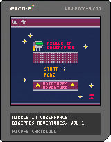

Nibble in Cyberspace: #Digipres Adventures, Volume 1
Nibble lives in cyberspace but their very reality is crumbling before
them. Help Nibble fight entropy itself by following good #digipres
practice - collect strategy and policy to actively tackle the
degradation of the digital world around them. Along the way, avoid
*all* the risks, viruses, physical damage, power surges; and try and get
your score high enough to avoid the complete collapse of cyberspace.
Nibble is an infinity game. The game will eventually self-destruct,
but can you prolong its existence by following good practice?
Nibble in Cyberspace teaches players that good digital preservation
will help our digital materials last longer, but there is a cost to
inaction as well. Players are invited to get the highest score they
can before the eventual collapse of everything around.
After all, you can't beat entropy, but you can fight it as long as
you try.

Notes on game-play:
In-game memory is actively corrupted as the player hits digital preservation
risks such as viruses. Memory is corrupted at random. To a limited extent the
player can "put memory back" by looking for good digital preservation practices
in the game. The random decay of memory is designed to demonstrate to players
the effect of bit rot in real time and demonstrate how its effect will be
insidious, and different every time.
Notes on format:
Those attending the session will be invited to play the game either on-screen,
or on their own mobile devices. There will be an opportunity to discuss the
mechanics of the game, development process, and the platform itself.
Colophon:
A Nibble is a 4-bit subset of a byte (8-bits); part of a byte.
Prior art
Via
Somaya Langley
Electro Online (2009) had a game entered called
Lose/Lose
which also garnered a reputation as
malware.
Players of Lose/Lose would be warned that playing the game will likely
result in files being deleted from their computer. Indeed, when baddies
were destroyed in the game, the logic would identify a random file on
the player's hard-disk and delete it - creating its own digital
preservation dilemma!